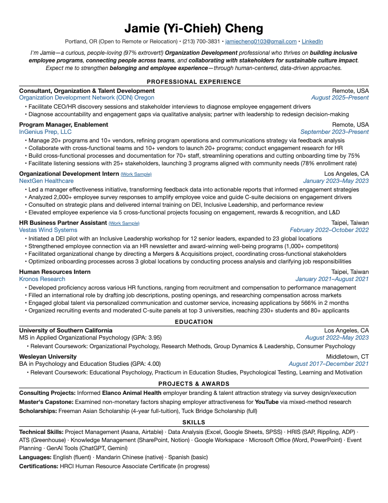

Cambia Health Solutions — Community & Culture Program Manager
STRETCH · H1B OVERRIDE
🆕 Posted Jun 8 · applied early
Req R-6627 · HR team · Hybrid 3 days/wk —
Portland office · $84.2k–$113.9k + 10% bonus ·
Workday posting ↗ ·
Package built 2026-06-10
~78Honest fit score
3–5 yrsRequired (Jamie ~3 ✓)
Tier 1Portland hybrid
P1/P3Culture + program mgmt sweet spot
🚨 H1B reality check (verified h1bdata.info, Jun 10): Cambia has 91 LCA filings (active through Sep 2025) — all tech-side, zero HR/People/culture filings ever. Not cap-exempt. Per Jamie's standing rule this is a PASS; we are proceeding as an explicit override because: she's an H1B transfer (no lottery), Cambia has active immigration counsel, the fit is rare, and she liked the role. The Workday sponsorship question (answered truthfully: YES) may auto-screen. Treat as a long shot — keep this week's sponsor-viable applications moving in parallel.
📄 Package previews

Resume — 1 page, verified centered & balanced · resume.pdf
🤝 Outreach lane (drafts only — nothing sent)
| Contact | Why |
|---|
Brooke Gentry
Executive Recruiter | First touch — float the H1B-transfer question before the auto-screen does it for us |
Tanya Macedo
DEI Program Manager (Lead) | Peer on the adjacent team — ERG/DEI program insight |
Elizabeth Hall
VP, Employee Experience & Talent | Owns the function this role sits in — only after the first two |
No USC/Wesleyan alumni found at Cambia (searched). Suggested order: Brooke → Tanya → Elizabeth.
✅ Jamie's review checklist (~10 min)
- Resume: skim the bullet selection (ODN community angle leads; Vestas Inclusive Leadership pilot featured). Check nothing feels off-voice.
- Cover letter — 3 flagged items: (1) "coordinates member events… supports volunteer leaders across the state" — confirm this matches your actual ODN day-to-day; (2) "five miles from my apartment" — it's likely closer to ~2–3 mi; suggest "a short drive from my apartment" or verify; (3) tagline "Dedicated to Building Communities That Belong" — keep or cut.
- form_fields.json: confirm sponsorship answer wording + voluntary disclosure defaults are how you want them.
- Workday account: create/sign in at cambiahealth.wd504.myworkdayjobs.com (manual, ~2 min) — needed before any prefill.
- Submit: follow submission_guide.md — you click the final Submit.
- Outreach: approve/edit the 3 drafts in outreach.md, send Brooke's first (ideally same day as application).
- Tracker: log in the application Google Sheet once submitted.
Semi-automatic pipeline: package pre-built and reviewed by Jamie; Workday prefill via CDP-attached real Chrome is available on request after account creation; nothing is ever submitted or sent without Jamie's click.